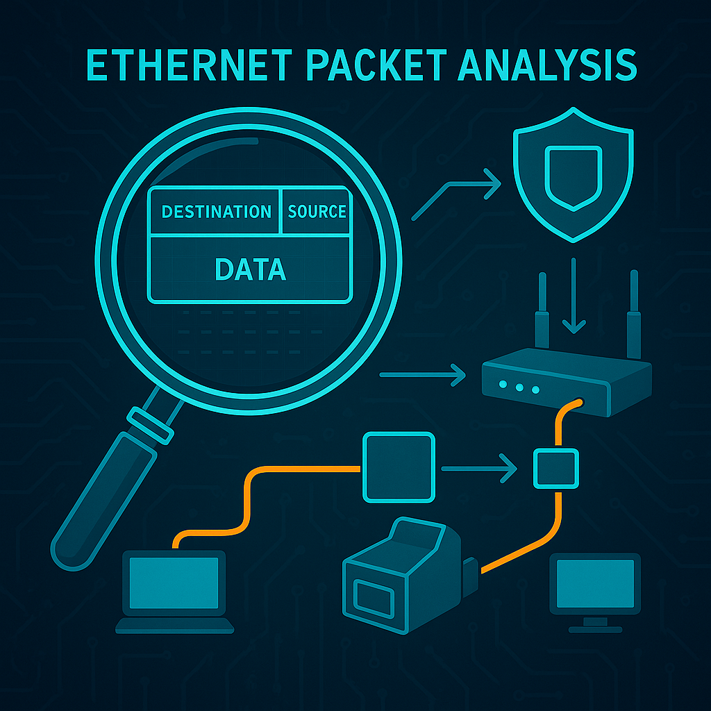

Packet Analyzers (Tcpdump & Wireshark) Notes:
div style="text-align: center;"> Packet capture is necessary to diagnose many networking issues. Both were discussed in the Google Cybersecurity certificate program.
Here I will list notes on using tcpdump and wireshark.
.pcap is the convention for these packet capture files
Tcpdump Example Syntax:
tcpdump --list-interfaces (list network interfaces available for packet capture)
tcpdump -c 5 (capture 5 packets)
tcpdump -n (don’t resolve dns)
tcpdump -nn (disable port resolution)
tcpdump -tttt (use human readable timestamps)
tcpdump -v verbose
tcpdump -vv more verbose
tcpdump -vvv most verbose
tcpdump src 10.1.1.100 (capture from a specific source address)
tcpdump dst 10.1.1.100 (capture from a specific destination address)
tcpdump src 192.168.1.1 and dst port 21 (combine filtering options)
tcpdump dst 10.1.1.1 and not icmp (negate filtering option)
tcpdump ether host aa:bb:cc:11:22:33 (filter by MAC address)
tcpdump ether port 80 (filter by port)
tcpdump -i eth0 (capture from specific interface)
tcpdump -A port 80 (-A shows packet contents in ASCII, not just the headers)
tcpdump -w tcpdumpoutput.pcap (save capture to a file)
tcpdump -r filename (read an output file)
Output format:
[timestamp, ip stands for ipv4, source ip and port, destination ip and port, tcp flags, sequence bytes x of y of this flow, acknowledgment number of bytes, window size of buffer, packet length)]
Flags(s=syn, connection start
F=fin, connection finish
P=push, data push
R=rst, connection reset
.=ack, acknowledgment)
Wireshark filter syntax examples:
ip.addr == 142.250.1.139
ip.src == 142.250.1.139
ip.dst == 142.250.1.139
eth.addr == 42:01:ac:15:e0:02
udp.port == 53
tcp.port == 80
tcp contains "curl"
http.host=="www.duckduckgo.com"
http.host contains "duckduckgo.com"One cool thing you can do with Wireshark is what they call follow the stream. Right click on a HTTP packet, and choose Follow – > HTTP stream. This shows the entire conversation (both requests and responses.)
Thats all for now!